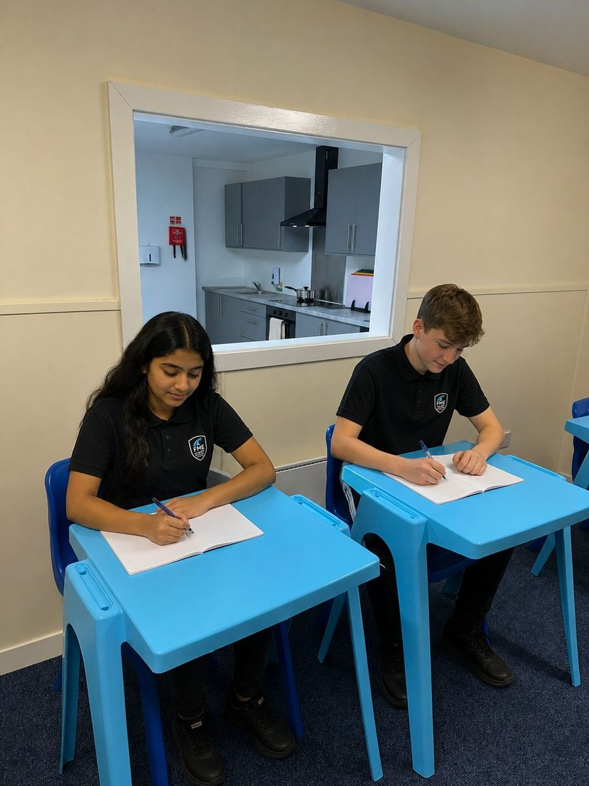
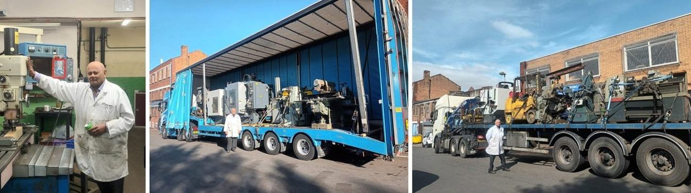
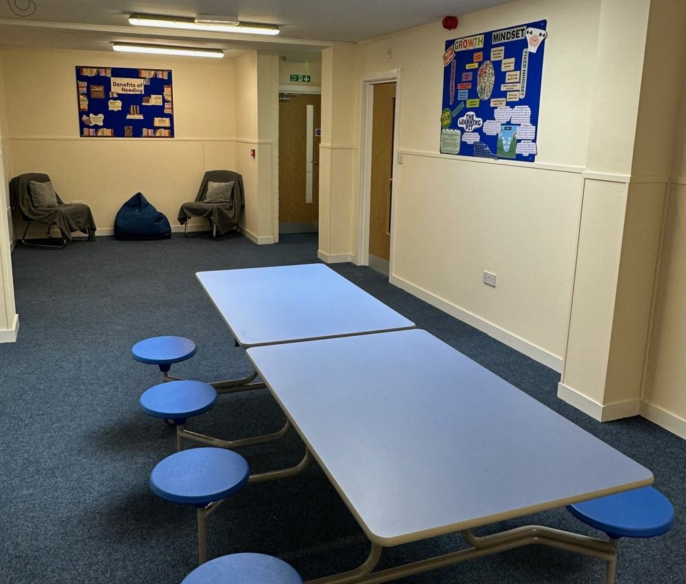
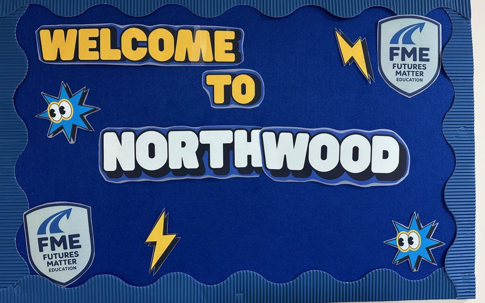
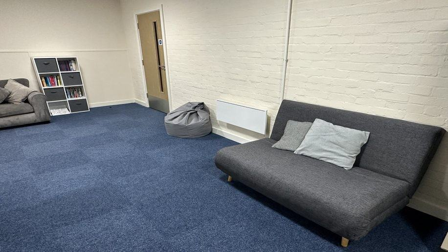
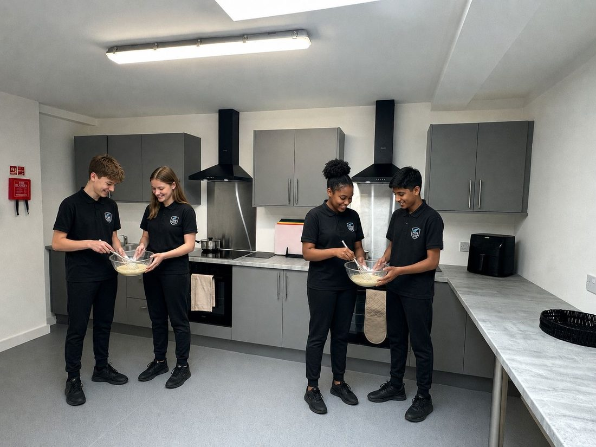
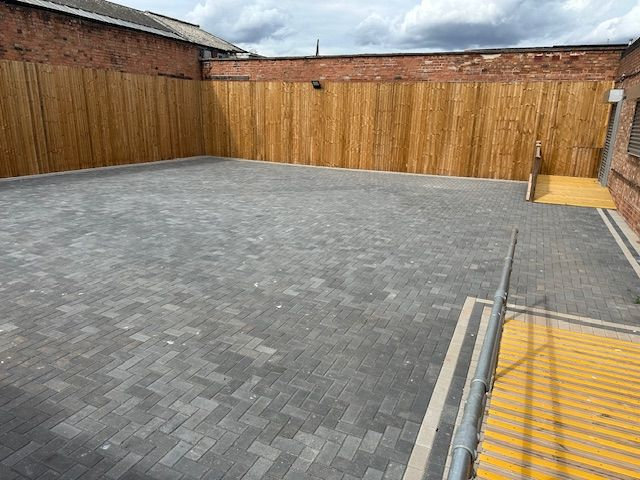
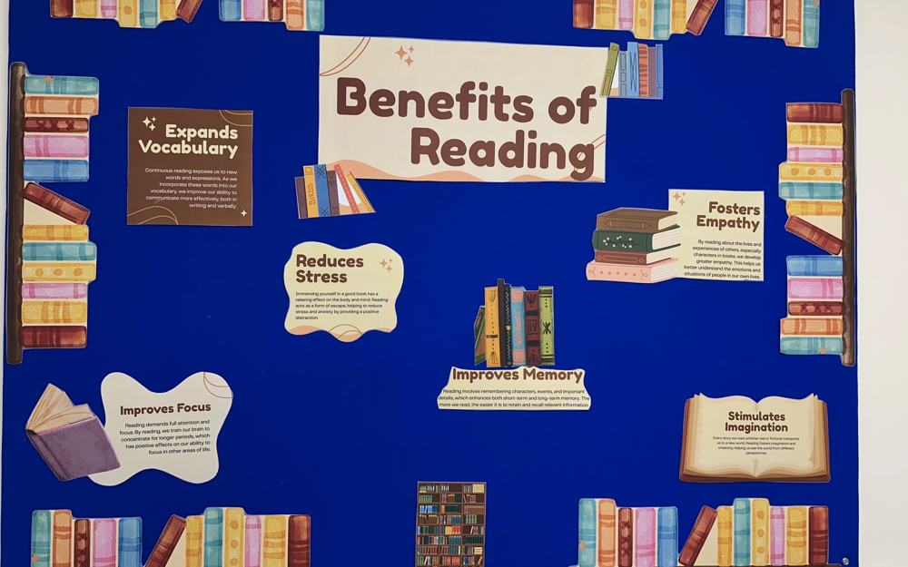

Independent Specialist Day SchoolFutures Matter Northwood
Now Open
News
A Fresh Start
Choosing the right school for any child is a life changing decision, and we know how much rides on getting it right. Futures Matter Northwood is a DfE‑registered, independent, specialist day school in Highgate, Birmingham, providing high quality education for boys and girls aged 11 to 16. Pupils have a range of needs, including moderate learning difficulties, speech, language and communication difficulties, autism, and social, emotional and mental health needs.
Futures Matter Education Ltd was set up by a group of highly experienced, like‑minded professionals, well known for supporting children and young people with a range of needs. Our company name reflects what we firmly believe: that everyone's future matters.
We know that sourcing suitable education can be a huge challenge for parents, carers and local authorities. Sometimes the right provision is full, or does not yet exist. Our solution was to set up a new service, so individuals can access relevant learning while being supported to attend or return to school.
We aim to:

| Unique Reference Number (URN) | 152552 |
| Registered as | Independent special school for pupils aged 11 to 16 with SEND (cognitive and learning needs, SLCN, ASD and SEMH) |
| Class size | Up to 5 pupils, with a Teacher/Instructor and Teaching Assistant in every class |
| School year | 190 days across 38 weeks, following Birmingham City Council term dates |
I bring 20 years of experience in SEMH and specialist education, including headship of a specialist therapeutic school and leadership of trauma informed, relational practice across integrated education, care and clinical teams. At Northwood, we are building something different: a school where every young person is met exactly where they are, regardless of prior attainment, and where we hold high challenge and high aspiration alongside a genuinely low threat, low barrier environment. These are not opposites, and together they are what allows young people to truly engage.
Our staff team is trained in trauma informed, relational practice. That means we put a pupil's emotional needs first, not as an alternative to learning, but as the route back into it. We welcome visits to our provision, so that you can experience Northwood first hand.
Your decision to choose our school will be supported by us throughout your child's time at Futures Matter Northwood. We will work closely with you, as parents, carers and local authorities, to help confirm your decision was the right one.
The Story of Our Building

For generations, 122 Emily Street has been part of our family, originally home to Northwood Engineering Company (B'ham) Limited, a family‑run British engineering business established in Birmingham in 1985. For nearly 40 years, this building was a place of industry, skill and endeavour: precision milling, drilling and turning, built on craftsmanship, accuracy and hard work. Those values have never left the building.
As the engineering chapter came to a close, our family was determined that the building should not simply be sold and its history forgotten. Where it once helped manufacture precision components, it is now a place for shaping something even more important: young people's futures. The machinery and workshops have given way to classrooms and learning spaces, but the underlying principles remain remarkably similar: patience, precision, perseverance, practical skills, pride in achievement, and the understanding that every individual has potential when given the right tools and support.
The purpose may have changed, but the ambition has not: to create, to develop, to take pride in what we do, and to build something that lasts.
Our Vision, Ethos & Values
Our aim is for learners to fully invest in the learning experience, because they see what's in it for them, and to embrace opportunities that help them succeed in life beyond school. At all Key Stages, our curriculum is structured to help learners secure success academically, personally, developmentally and in life beyond school.
Highest aspirations for every young person, whatever their starting point.
Dignity for pupils, families and each other, always.
Confidence and self‑belief to keep going when things are hard.
Looking after one another and our community.
Our leaders are determined to provide a positive and welcoming atmosphere and culture. Our staff team are proud and committed to supporting pupils to secure successful futures. Our core principles also mean that we:
We believe pupils should have a genuine say in their own education. Pupils' views are sought and valued as part of curriculum planning, annual reviews and transition reviews, and we regularly check in with pupils about how school is working for them. Listening to what pupils tell us, about their interests, their worries and what helps them learn, shapes how we support each individual and how Futures Matter Northwood continues to develop as a school.
Our Facilities
Futures Matter Northwood is based in a converted engineering building in Highgate, Birmingham, giving pupils a calm, non‑institutional setting to learn in.






Our Curriculum
We believe every pupil has a personal best, and our trauma‑informed approach is designed to help them achieve it. Our curriculum is pupil‑centred, ambitious, relevant and engaging: high‑quality schemes of work, including White Rose Maths, White Rose Science and Pearson English, are tailored to each pupil's needs, interests and learning profile.
For pupils who need to build confidence, regulation and engagement first. Personalised, skills‑based learning in subjects that motivate and interest them.
A broad, ambitious academic curriculum leading to GCSEs and equivalents, for pupils ready for more traditional subject‑based study.
We hold high aspirations within a genuinely low‑threat, low‑barrier environment, recognising that pupils with SEMH and ASC needs can only access an ambitious curriculum once they feel safe, regulated and understood. Core subjects are taught through this approach, with humanities (history, geography and religious studies) taught as separate subjects on a rotating basis, enhanced by our ‘Themes of the Week’.
Food Technology and Physical Education provide regular hands‑on, practical learning opportunities. Personal, Social, Health and Economic (PSHE) education runs as a golden thread throughout all subjects and school activities, and every pupil reads for a protected 30 minutes each day.
Accreditation starts in Year 7 with the AQA Unit Award Scheme and Entry Level qualifications; by Year 9, pupils can sit Level 1 Functional Skills. At Key Stage 4, pupils follow a personalised pathway of accreditation options, which may include Functional Skills, Entry Level Certificates, GCSEs and equivalents, alongside life skills and vocational qualifications such as Basic First Aid, Food Hygiene, The King's Trust awards, and Duke of Edinburgh's Award.
We support pupils to understand the benefits of living a healthy lifestyle and making good life choices, starting from a healthy breakfast on arrival.
We are committed to ensuring our pupils achieve meaningful outcomes that prepare them for successful adult lives.
Each pupil's outcomes are carefully tailored to their Education, Health and Care Plan (EHCP) and personal aspirations. We work closely with pupils and families to set ambitious yet achievable goals, reviewing progress regularly so that every child reaches their personal best. As our cohort of pupils grows, we will continue to adapt our curriculum, which is kept under at least annual review by our Head Teacher, Proprietor and Chair of School Governance Board.
Pupils who are academically and emotionally ready to complete tests and examinations will do so at the appropriate time. Because only a small number of pupils sit public examinations each year, results are not published on our website, to avoid identifying any individuals concerned. Results are reported to parents and carers by personal letter on the relevant results day, and every parent and carer receives an annual report of their child's progress and attainment.
All pupils receive age and ability appropriate Relationships and Sex Education (RSE), vital in preparing them to recognise and sustain healthy, safe relationships. Our Religious Studies offer, delivered as part of our humanities rotation, helps pupils understand the core values of the main religions, referring to Birmingham's Locally Agreed RE Syllabus, promoting tolerance and respect for diversity.
Personal & Social Development
We take a trauma‑informed, relational approach to developing the whole child. When a pupil does not yet feel safe, regulated and connected, this affects their readiness to learn, so building trust, co‑regulation and emotional wellbeing, informed by Thrive principles, sits alongside academic progress at every stage.
Staff are trained in trauma informed, relational practice, putting pupils' emotional needs first so they can re‑engage with learning.
Age and ability appropriate RSE, preparing pupils to recognise and sustain healthy, safe relationships.
A key feature of our curriculum at every Key Stage, preparing pupils for life, training and employment beyond school.
Pupils are recognised and rewarded for positive engagement and progress, with personalised targets linked to their EHCP.
Our staff complete comprehensive GCM (Global Conflict Management) Therapeutic De‑escalation and Physical Intervention training, an accredited programme grounded in trauma‑informed principles and the belief that physical intervention is always a last resort. This supports staff to promote positive behaviours, use therapeutic de‑escalation techniques, and keep everyone safe. Pupils are recognised and awarded points for positive engagement, with personalised targets based on their EHCP objectives.
Our Staff, Safeguarding & Wellbeing
We follow rigorous safer recruitment processes to ensure high quality staff are recruited and that pupils are kept safe. Senior leaders involved in recruitment are trained in Safer Recruitment. All staff undergo comprehensive checks, including references and an Enhanced DBS check.
| Role | Status |
|---|---|
| Head Teacher, DSL and Designated Teacher for Looked After Children | Benjamin Neasom (in post) |
| Administrator | Mrs Ripa Begum (in post) |
| Finance and Business Support Manager | Kirsty Chamberlain (in post) |
| Teacher/Instructor | Simone Welch (in post) |
| Specialist English Teacher | Anika Ullah (in post) |
| Specialist Maths & Science Teacher | Currently onboarding |
| Teaching Assistant | Kiana Gibson‑Sawyers (in post) |
| Maintenance | External contractor |
We keep classes small so that every pupil is known well and supported closely. Classes are capped at 5 pupils, with a Teacher/Instructor and a Teaching Assistant in every class. This allows staff to adapt pace, pitch and approach to each pupil's needs moment by moment, rather than pupils having to fit a one‑size‑fits‑all lesson.
Chair of School Governance Board: Mark O'Donnell. Proprietor: Carrie‑Ann McGurk (Deputy Designated Safeguarding Lead). Founding Headteacher: Benjamin Neasom (Designated Safeguarding Lead and Designated Teacher for Looked After Children). Simone Welch is also a Deputy DSL and trainee teacher, and Kiana Gibson‑Sawyers is a first aider and trainee Thrive Practitioner.
Our safeguarding statement, team and contacts, and how to report a concern, are in the Safeguarding section.
Alongside our trauma‑informed, relational approach to teaching, pupils have access to Speech and Language Therapy and other clinical input, arranged through service level agreements as individual pupils' needs are identified. We are also training an in‑house Thrive Practitioner to further strengthen our emotional and social development offer on site. Support is matched to what's set out in a pupil's EHCP, and we work closely with parents, carers and other professionals to ensure this support is joined up.
Our school has a medical room and safe storage of medication. Staff complete Basic First Aid Training, with a three yearly refresher. Individualised Risk Assessments are agreed with parents and carers for pupils with specific health needs. Nominated staff are trained to administer prescribed medication, which is recorded and kept in a locked medical cabinet.
Health and Safety is coordinated by the Head Teacher. All staff complete Health and Safety awareness training, and maintenance contractors complete comprehensive site checks, with regular audits. Risk assessments across all curriculum activities and the environment are reviewed, authorised and signed off by the Head Teacher before activities take place, including a full Fire Risk Assessment reviewed annually with fire services.
Everyone in our school community is entitled to feel valued, safe and protected from harm, including from bullying, in line with NSPCC best practice guidance. We are a ‘telling school’, where pupils, parents, carers and staff are encouraged to raise concerns, and every report is listened to, taken seriously and responded to promptly. We work with both those who are bullied and those who bully to understand what has happened and to repair harm, and our curriculum teaches and promotes British Values of tolerance, respect, equality and diversity.
We're delighted to welcome new members to our growing team at Futures Matter Northwood.
“My skill set spans many sectors including education, prison, probation, housing, and residential care. These roles strengthened my ability to understand individual needs, build trust, and create environments where people feel seen and have a safe environment to grow. I chose to work at FME because I'm passionate about having a positive impact on young people: helping them build confidence, develop independence, and realise their potential. What makes this more exciting is the opportunity to be part of building something amazing from the ground up.”
“I specialise in Food Technology, and I've always believed the kitchen is one of the best classrooms in the world: it is a place where confidence, creativity, and independence grows. I joined FME because working in an SEN provision means supporting young people in ways that truly matter. Helping our learners discover their strengths through fun, hands‑on, meaningful learning is exactly why I'm here.”
Uniform & Equipment
We provide all equipment, including stationery. Bags should contain only a pencil case, home/school diary, P.E. kit and sanitary products as appropriate. Please do not bring money, personal items, jewellery, or food/drink into school (unless by prior agreement). Mobile phones must be agreed with the Head Teacher and handed in on entry.
Breakfast is available on arrival at Arrival and Breakfast Club (8.45am). A hot lunch, brought onto site from a local provider, is included, and dietary and allergy requirements are catered for. Please let the school office know of any dietary needs so we can plan accordingly.
Safeguarding
Safeguarding is everyone's responsibility at Futures Matter Northwood. Many of our pupils have had experiences that make life and school difficult, so keeping them safe, and helping them feel safe, comes before everything else we do.
We follow Keeping Children Safe in Education (KCSIE) and the procedures of the Birmingham Safeguarding Children Partnership. We work closely with families, Birmingham Children's Trust, the police, health services and other agencies whenever a child needs extra help or protection.
All staff receive safeguarding training when they join and at least once every year, and everyone who works with our pupils is checked under our safer recruitment procedures. If you are worried about any child, however small the worry, please tell us. We will always listen, take it seriously and act sensitively.
Safeguarding means protecting children from abuse and neglect, looking after their health and development, making sure they grow up in safe and caring circumstances, and helping every child to do as well as they can. It covers child protection, bullying, online safety, health and safety, first aid, keeping children safe from extremism, and making sure the adults who work with them are suitable to do so.
Our Designated Safeguarding Lead and two deputies lead child protection at the school. To contact any of them, email safeguarding@futuresmattereducation.co.uk, which all three read on school days, or phone the school office on 0121 574 5455 in school hours.
Benjamin Neasom is also our Designated Teacher for Looked After Children, our Prevent lead and our Operation Encompass key adult. The Chair of the School Governance Board is Mark O'Donnell.
Tell the Head Teacher. If your concern is about the Head Teacher, contact the Chair of the School Governance Board, Mark O'Donnell, through the school office. If it is about the Proprietor, contact the Local Authority Designated Officer (LADO) team directly on 0121 675 1669. Please do not use the safeguarding email for these concerns.
We will always try to work with families. Where we think a child may be at risk of harm, we may need to share information with children's social care or the police. We will usually talk to parents or carers first, unless doing so could put the child at risk.
Our Safeguarding and Child Protection Policy is reviewed every year by the Head Teacher, the Proprietor and the Chair of the School Governance Board. It sets out how we recognise and respond to concerns, how we recruit staff safely, and how we deal with allegations against adults.
Children and young people can face risks online, from bullying and harmful content to contact from people they do not know. Talking openly about what they do online is the best protection. These organisations offer clear advice for parents, carers and young people.
We have a duty to help protect pupils from being drawn into extremism and terrorism. Our Designated Safeguarding Lead is our Prevent lead, and staff are trained to notice and report concerns. Parents and carers can find advice at Educate Against Hate.
Operation Encompass is a police and education partnership. When the police attend a domestic abuse incident involving a child, they tell the school's key adult before the start of the next school day, so we can quietly offer the right support. Our key adult is Benjamin Neasom. Find out more at operationencompass.org.
| Service | Contact |
|---|---|
| Children's Advice and Support Service (CASS), Birmingham Children's Trust | 0121 303 1888. Monday to Thursday 08:45 to 17:15, Friday 08:45 to 16:15. Emergency out of hours: 0121 675 4806 |
| Local Authority Designated Officer (LADO), Birmingham Children's Trust | 0121 675 1669. Email ladoteam@birminghamchildrenstrust.co.uk |
| NSPCC helpline (for adults worried about a child) | 0808 800 5000 |
| Childline (for children and young people) | 0800 1111, free and confidential |
| Police | 999 in an emergency, 101 otherwise |
Term Dates & The School Day
Pupils attend school for 190 days over 38 weeks, aligned as far as possible with Birmingham City Council term dates. All pupils follow education programmes totalling 32.5 hours per week. Below is an illustrative weekly timetable showing how a pupil's week might look in practice.
| Time | Monday | Tuesday | Wednesday | Thursday | Friday |
|---|---|---|---|---|---|
| 8.45 to 9.00 | Arrival and Breakfast Club | ||||
| 9.00 to 9.15 | Tutor Groups and Registration | ||||
| Period 1 9.15 to 10.00 | Maths | Maths | Maths | Maths | Maths |
| Period 2 10.00 to 10.45 | English | English | English | English | English |
| 10.45 to 11.00 | Break | ||||
| Period 3 11.00 to 11.45 | Science | Humanities | Humanities | Computing & Digital | Humanities |
| 11.45 to 12.15 | Structured Reading | ||||
| 12.15 to 12.45 | Lunch | ||||
| 12.45 to 12.55 | 10 minute check‑in (reflection / co‑regulation) | ||||
| Period 4 12.55 to 13.55 | Offsite PE local sports facility | Science | D&T Food: Theory | Careers Education | Offsite Enrichment community / life skills |
| Period 5 13.55 to 14.55 | Offsite PE local sports facility | PSHE | D&T Food: Practical | Science | Offsite Enrichment community / life skills |
| 14.55 to 15.15 | Reflection / Tutor Time | ||||
| 15.15 | School ends: pupils escorted to transport home | ||||
We know that many of our pupils have experienced difficulties with attendance in previous settings, and we work closely with pupils, parents and carers to understand and address any barriers. Regular attendance gives pupils the best chance to access the therapeutic and academic support on offer, and parents/carers are kept informed of term dates, inset days and holidays well in advance.
Supporting Your Child's EHCP
An early Annual Review meeting is called within the first 12 weeks of admission, giving pupil, parents/carers, staff and local authority the opportunity to discuss integration, assessments, support programmes, and EHCP objectives, and to agree the date of the next full Annual Review.
Held at key transition points (for example, Years 6, 9 and 11) with the views of the pupil, parents/carers, staff, clinicians and Local Authorities heard and minuted. These meetings focus on whether EHCP objectives have been met and/or need updating, and pupils have a Transition Plan to support a successful move between phases. A proforma is sent out ahead of these meetings, and we encourage families to take time to consider their responses in advance.
Our Admissions Process
We specialise in supporting children aged 11 to 16 with moderate learning difficulties, communication and interaction needs, autism, or social, emotional and mental health needs. Referrals must come to us directly from the pupil's local authority, at any point in the year.
Referrals come directly from the pupil's local authority, and are considered by our Admissions Panel.
Where we believe we might be able to meet a child's needs, we arrange to meet the child and their parent or carer to learn more, before a place is offered.
We offer a home or school visit and taster session, so pupils and families can experience our provision first hand.
We must be certain that we can meet a child's needs effectively and that the placement is likely to be successful for everyone concerned. We confirm this, and a contract, fees and transport arrangements, if applicable, are agreed with the local authority.
A start date is agreed: always the earliest date we can facilitate a smooth, personalised admission. All pupils have a personalised Admission Programme supporting a smooth transition.
Please refer to our Admissions Policy, available on request from the school office. If you wish to discuss a referral, please contact our Headteacher, Benjamin Neasom, through the school office at office@futuresmattereducation.co.uk.
Find Us
We're conveniently located in Highgate, Birmingham, with good access by road, bus and rail.
Practical Information
During the referrals process, a child's need for additional support will be identified, and appropriate provision put in place before admission, including one‑to‑one support from a bi‑lingual Teaching Assistant, or an interpreter for meetings where needed.
In accordance with the Independent School Standards and the Children's Act 1989, all pupils can discuss concerns and make complaints through our Complaints Procedure. Informal complaints are addressed with a pupil's Tutor or class teacher. Formal complaints should be reported directly to the Head Teacher (or the Proprietor, if the complaint concerns the Head Teacher). Concerns from adults should first be raised informally, directly with the school.
All school policies, including our Safeguarding and Child Protection Policy, Admissions Policy, Complaints Procedure and Careers and Work‑Related Learning Policy, are listed in the Policies section below.
Policies
Each policy opens as a PDF in a new tab, where you can read it online or save a copy. Some pages are placeholders while final copies are uploaded. Every document listed here is free of charge on request, as a paper copy or by email, and paper copies can be inspected at the school office during the school day.
Futures Matter Northwood is a newly opened school, so there is no previous school year's academic performance or public examination results to report yet. We will publish them here when they are available. Results are always reported to parents and carers in a personal letter and an annual report.
Pre-registration inspection report, 13 May 2026: likely to meet all the independent school standards if registered. View the report (PDF). Future reports will be added here.
To ask for a policy, call the school office on 0121 574 5455 or email office@futuresmattereducation.co.uk.
Get in Touch
We welcome visits to our provision, so that you can experience Northwood first hand. Whether you're a parent, carer, social worker or SEND caseworker, we're happy to answer questions before any formal referral is made.
Fill in the form and we will prepare your message to the school office. Please do not include your child's full name or any sensitive details here. We will ask for what we need when we speak.
This website cannot send messages for you, so nothing has been sent yet. Choose one of the options below, or copy the text and email it to office@futuresmattereducation.co.uk.